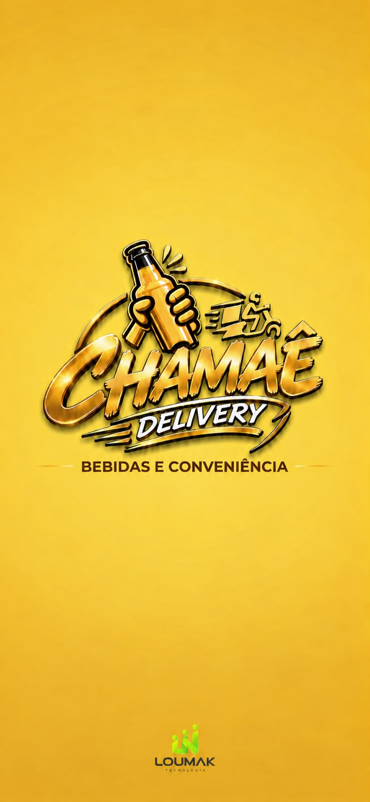

Arte aprovada em 21/10/2026. Imagens integrais, normalizadas à mesma altura para comparação, sem redesenho ou recorte.

A arte original é mais estreita que a tela. O Flutter preserva sua proporção com contain e estende cores amostradas apenas nas margens. A barra de status pertence ao Android. A captura está no estado final da animação; não há dados comerciais ou serviços de produção no harness.